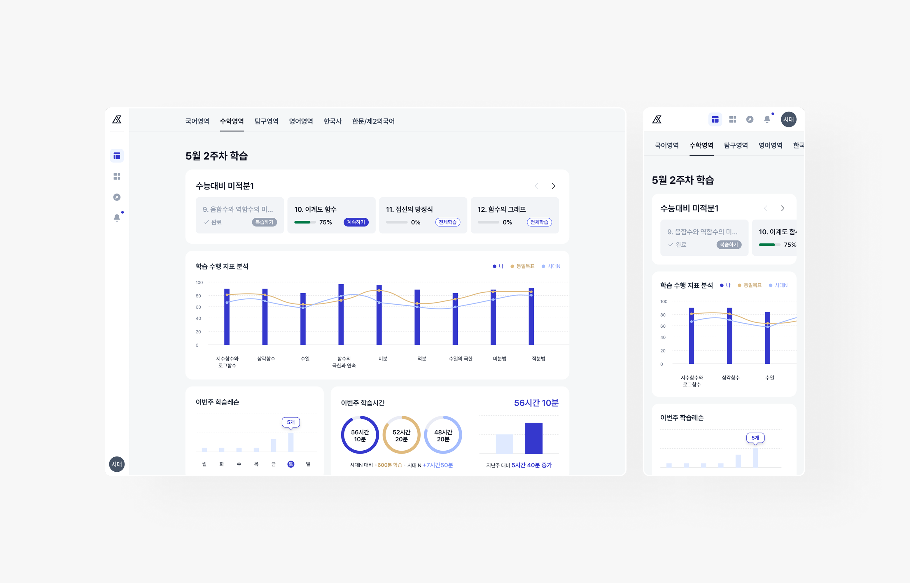
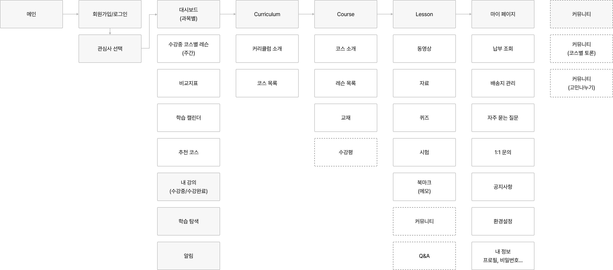
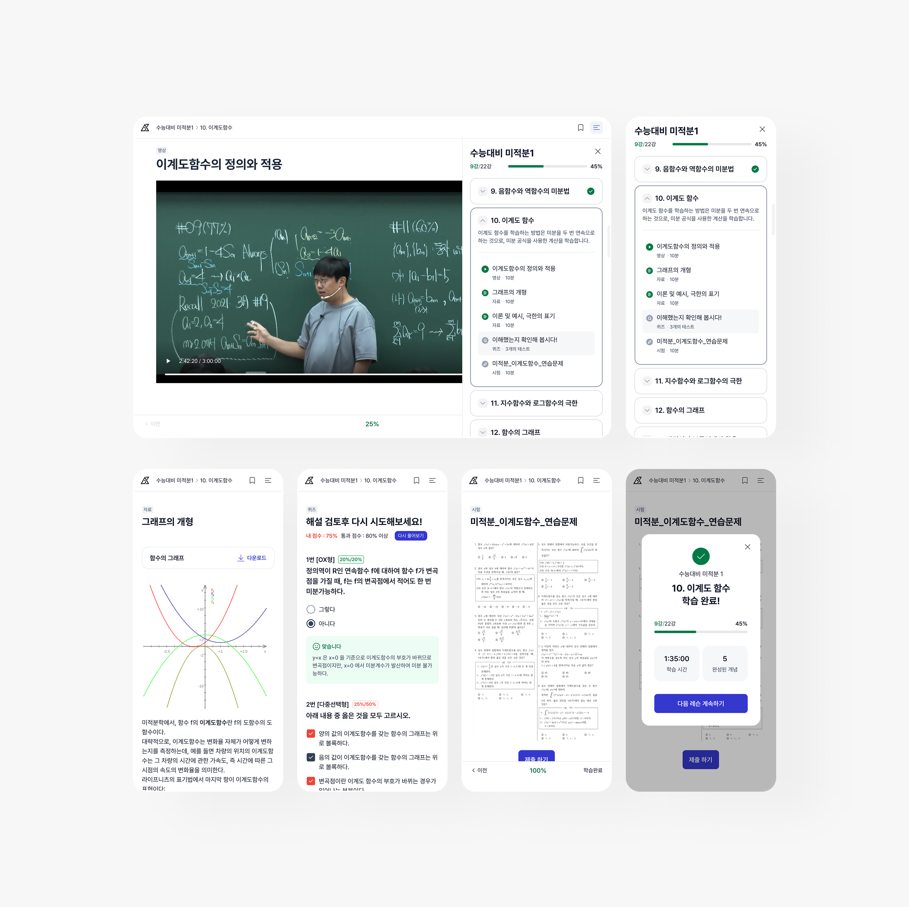
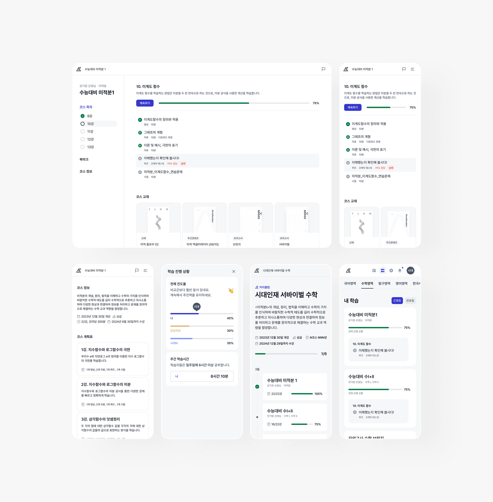
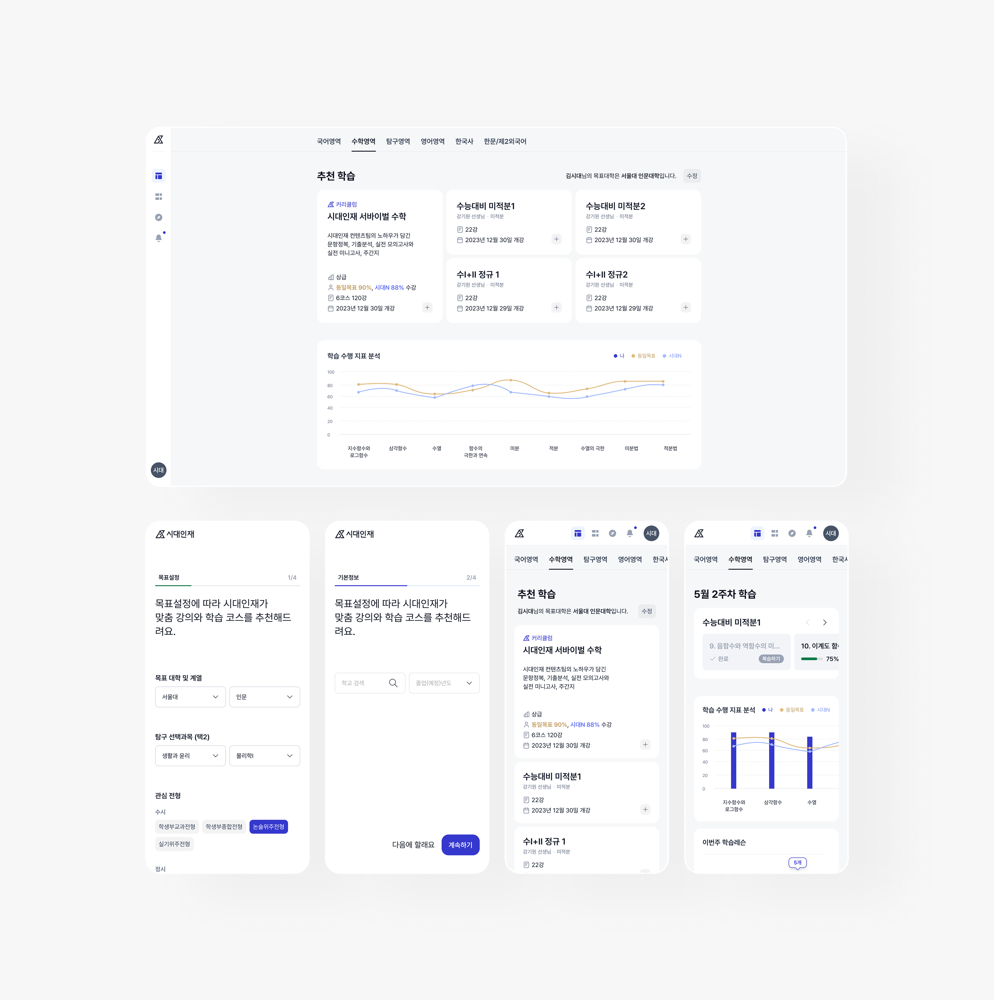

시대인재 VOD 플랫폼
사용자의 학습 완주율을 극대화하고 지속적인 학습 동기를 부여하는 수험생 맞춤형 학습 관리 플랫폼
개인의 목표 대학·전형 정보, 현재 학습 진도율, 주간 학습 시간 데이터를 기반으로 개인화된 커리큘럼과 대시보드를 제공하여 자기주도적 학습을 지원

현안 → 전략
01
학습 몰입도 저하
수험생이 목표 대비 자신의 학습 현황을 직관적으로 파악하기 어려움
대시보드 기반 학습 관리
한눈에 학습 현황·완료율·과제 진행도를 시각화하고,
캘린더와 연동해 학습 일정 관리
02
비효율적 커리큘럼 선택
방대한 강의 중 어떤 과정을 수강해야 할지 혼란
맞춤형 학습 경로 제공
AI 추천 알고리즘이 성취도·학습 습관 데이터를 분석해 개인 맞춤 학습 경로를 제안
03
학습 지속성 약화
성취율·비교군 데이터가 실시간으로 제공되지 않아 동기 부여에 한계
실시간 학습창 & 인터랙티브 기능
시청→퀴즈→시험→피드백 사이클과 오답노트 자동 생성으로 몰입 유지
04
진도 및 성과 관리의 어려움
학생·학부모·교사가 학습 진행 상황을 한눈에 확인하기 어려움
부모용 리포트 제공
주간·월간 리포트와 알림 기능으로 학부모가 학습 참여도를 모니터링
퍼소나 & 여정
김시대 · N수생 또는 고3 수험생
목표 대학 진학을 위해 효율적이고 체계적인 학습관리가 필요. 개인 학습 진도 관리와 추천 강좌 기반 자기주도 학습을 원함
그래서, 김시대의 여정은 이렇게 이어집니다
목표 설정
목표 대학·전형 유형 입력 →
맞춤 커리큘럼과 추천 학습 코스 제안
학습 진행
'내 학습'에서 진도율·학습 상태 확인 →
북마크로 주요 개념 정리
이해도 점검
퀴즈·시험으로 이해도 점검 →
오답 해설과 재도전으로 개념 보강
성취·분석
주간 학습 시간·완성도·비교군 데이터 확인 →
부족한 부분은 추천 코스로 연결

Highlight 01 · 학습창
시청부터 재도전까지, 하나의 화면에서 완성되는 학습 사이클
영상학습 → 퀴즈 → 시험 → 피드백으로 이어지는 사이클을 한 화면에 배치. 오답 시 해설과 재도전 기회를 즉시 제공하고, 북마크·메모로 자기주도 학습 지원

Highlight 02 · 대시보드
목표 대비 내 위치를, 비교군 데이터로 한눈에
그래프·차트로 성취도와 시간 투입량을 시각화하고, 동일 목표 집단 대비 비교군 데이터로 동기를 자극. 캘린더 연동으로 주간 학습 패턴까지 한 화면에서 확인

Highlight 03 · 내학습
과목별 진도부터 과제 제출까지, 한 페이지 관리
수강 중인 과목의 진도율·과제 현황·시험 준비 상황을 한 페이지에서 확인. 과목별 Progress Bar와 알림으로 다음 학습을 자연스럽게 안내

결과
학습 현황을 대시보드로 시각화, AI 추천으로 커리큘럼 방향 제시
인터랙티브 학습창과 학부모 리포트로 몰입과 지속성까지 확보
01 · 학습 몰입도 저하
대시보드 기반 학습 관리로 해결
02 · 비효율적 커리큘럼 선택
맞춤형 학습 경로 제공으로 해결
03 · 학습 지속성 약화
인터랙티브 학습창으로 해결
04 · 진도 및 성과 관리 어려움
부모용 리포트 제공으로 해결